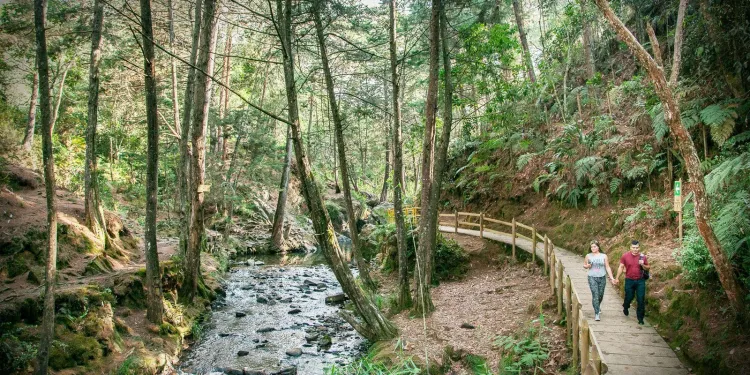

1. Medellín (skyline)
Medellín, capital de Antioquia, famosa por su clima y modernidad.
2. Piedra (Guatapé / El Peñol)

La Piedra del Peñol: monolito con vistas espectaculares.
3. Parque Arví
Reserva natural cerca de Medellín ideal para ecoturismo.